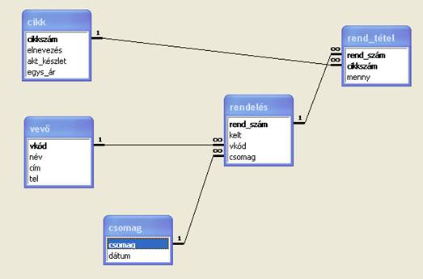
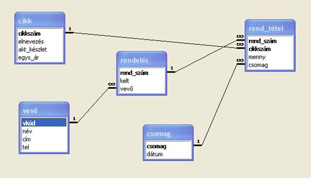
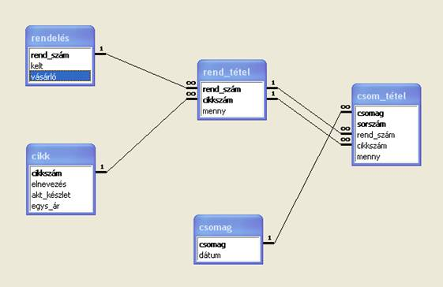

7.3. Csomagküldő
Adott csomagküldő szolgálat diszpécserszolgálatának adatbázisát látjuk. A vásárlók levélben vagy telefonon a cég katalógusában felsorolt cikkek közül rendelnek, melyet a szolgálat a változó aktuális készletek erejéig tud teljesíteni. Az összeállított csomagot postán vagy futárral küldik ki a vásárló címére.
3 verzó szerint történhet a megrendelések teljesítése.
Minden esetben próbáljon körültekintően mintasorokat készíteni:
- a csomag több tétel esetén is ugyanannak a vevőnek szóljon,
- csak akkor indítson csomagot, ha lesz legalább egy teljesíthető tétele,
- egy csomagtétel regisztrálásával együtt aktualizálja a készletet.
Teljesen természetes, ha közben egyre jobban vágyik az sql-megszorítások adatbázisba történő beépítésére.
A verzió
A szolgálat csak teljes rendeléseket küld ki, tehát bármely rendelés minden tételét egyszerre kell kiszállítania. Előfordulhat, hogy adott vevőnek több rendelése kerül egy csomagba, mire azok minden tétele teljesíthetővé válik a pillanatnyi készletek alapján.
Az adatbázis szerkezete
Figyelje meg, hogy a csomag tételei valójában a kitöltött csomaggal rendelkező rendelések!

Gyakorlás céljából töltse le az Access-adatbázist!
B verzió
A szolgálat szakaszosan teljesít a pillanatnyi készleteknek megfelően; tehát előfordulhat, hogy valamelyik rendeléstétel később, egy másik csomagban kerül kiszállításra annak rendelt mennyiségével. Így is előfordulhat, hogy egy csomagba több rendelés tételei kerülnek bele.
Az adatbázis szerkezete
Figyelje meg, hogy a csomag tételei valójában a kitöltött csomaggal rendelkező rendelés-tételek!

Gyakorlás
céljából töltse le az
Access-adatbázist!
C verzió
A szolgálat folyamatosan teljesít a pillanatnyi készletek erejéig; tehát előfordulhat, hogy egy rendelési tételre is csak részletekben, azaz több csomaggal érkezik meg a kívánt mennyiség. Még az is előfordulhat, hogy egy csomagba több rendelés ugyanolyan cikkről szóló tétele kerül valamekkora mennyiségben.
Az adatbázis szerkezete
Figyelje meg, hogy a csomag tételei valóban önállóak a rendelés-tételek és a csomagok közti elméleti N_M viszony miatt!

Gyakorlás céljából töltse le az Access-adatbázist!